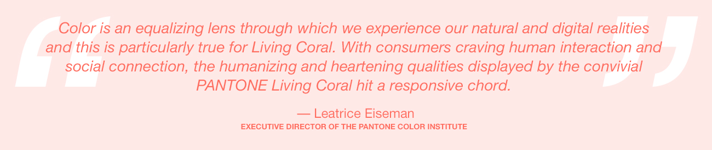

- html
- Css
- java
css은 무엇인가?
css
hell webffjlfdfjdd;dddPANTONE 16-1546 살아있는 산호초는 자연에서 발견되는 색의 원하고 친숙하며 활력을주는 측면을 방출합니다. 영광 스럽지만 아직 불행히도 더 어려운, 바다 아래에있는이 생기 있고 활기찬 색은 눈과 마음을 매료시킵니다. 자연스럽게 생생하고 반음계 인 생태계의 중심에 위치한 PANTONE Living Coral은 산호초가 다양한 색채의 만화경을 제공하는 방식을 연상케합니다.
w3c
산호초
css에 대한 이미지 검색결과en.wikipedia.org
마크업 언어가 웹사이트의 몸체를 담당한다면 CSS는 옷과 액세서리 같은 꾸미는 역할을 담당한다고 할 수 있다.
PANTONE 16-1546 살아있는 산

호초는 자연에서 발견되는 색의 원하고 친숙하며 활력을주는 측면을 방출합니다. 영광 스럽지만 아직 불행히도 더 어려운, 바다 아래에있는이 생기 있고 활기찬 색은 눈과 마음을 매료시킵니다. 자연스럽게 생생하고 반음계 인 생태계의 중심에 위치한 PANTONE Living Coral은 산호초가 다양한 색채의 만화경을 제공하는 방식을 연상케합니다.
Pantone 올해의 색상에 대하여
20 년 동안 Pantone의 Color of the Year는 패션, 가정용 가구 및 산업 디자인은 물론 제품, 포장 및 그래픽 디자인을 비롯한 여러 산업 분야에서 제품 개발 및 구매 의사 결정에 영향을 미쳤습니다.
Color of the Year 선정 과정에는 신중한 고려와 추세 분석이 필요합니다. Pantone Color Institute의 Pantone 색상 전문가는 매년 새로운 색상 영향을 찾기 위해 세계를 빗질합니다. 여기에는 엔터테인먼트 산업과 영화 제작, 여행 예술 컬렉션과 새로운 예술가, 패션, 모든 디자인 분야, 인기있는 여행지뿐만 아니라 새로운 라이프 스타일, 플레이 스타일 및 사회 경제적 조건이 포함될 수 있습니다. 영향은 색상, 관련 소셜 미디어 플랫폼 및 향후 전세계 스포츠 주목 이벤트에 영향을 미치는 새로운 기술, 재료, 질감 및 효과에 기인합니다.
This is a paragraph.
This is another paragraph.
Pantone Color Institute ™ 정보
Pantone Color Institute는 Pantone의 비즈니스 단위로 계절별 활주로 색상을 강조하고 전 세계 색상 추세를 예측하며 제품 및 브랜드 시각적 신원에 대해 색상을 지정하는 회사에 조언합니다. 계절적 추세 예측, 컬러 심리 및 컬러 컨설팅을 통해 Pantone Color Institute는 글로벌 브랜드와 협력하여 디자인 전략에서의 힘, 심리 및 색상 감정을 활용합니다.